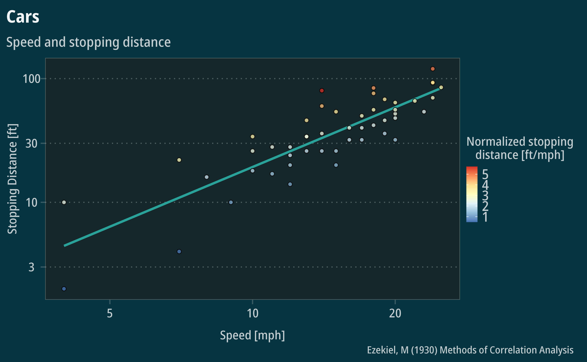
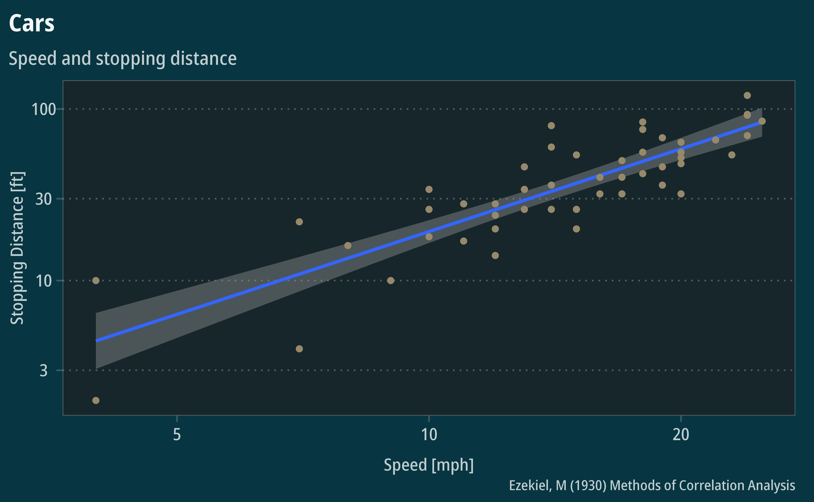
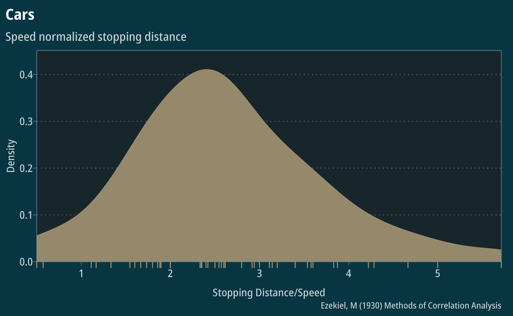

Noto Dark
Noto-Dark.RmdExamples
ggplot(cars) +
geom_smooth(aes(speed, dist),
method = "lm",
color = "#2aa198",
se = FALSE) +
geom_point(aes(speed, dist,
fill = dist/speed),
shape = 21,
color = "black",
alpha = 0.75) +
theme_mps_noto_dark() +
scale_fill_distiller("Normalized stopping\ndistance [ft/mph]",
palette = "RdYlBu", direction = -1) +
scale_y_log10() +
scale_x_log10() +
labs(title = "Cars", subtitle = "Speed and stopping distance",
caption = "Ezekiel, M (1930) Methods of Correlation Analysis",
x = "Speed [mph]",
y = "Stopping Distance [ft]") +
theme(legend.direction = "vertical", legend.position = "right")
#> `geom_smooth()` using formula = 'y ~ x'
Use the shortcut function to set legible default geoms:
noto_dark_geom_defaults()
ggplot(cars) +
geom_smooth(aes(speed, dist),
method = "lm") +
geom_point(aes(speed, dist)) +
theme_mps_noto_dark() +
scale_y_log10() +
scale_x_log10() +
labs(title = "Cars", subtitle = "Speed and stopping distance",
caption = "Ezekiel, M (1930) Methods of Correlation Analysis",
x = "Speed [mph]",
y = "Stopping Distance [ft]")
#> `geom_smooth()` using formula = 'y ~ x'
ggplot(cars) +
geom_density(aes(dist/speed)) +
geom_rug(aes(dist/speed), sides="b", outside = TRUE) +
scale_y_continuous(expand = expansion(mult = c(0, 0.1))) +
scale_x_continuous(expand = c(0,0)) +
coord_cartesian(clip = "off") +
theme_mps_noto_dark() +
labs(title = "Cars", subtitle = "Speed normalized stopping distance",
caption = "Ezekiel, M (1930) Methods of Correlation Analysis",
x = "Stopping Distance/Speed",
y = "Density")